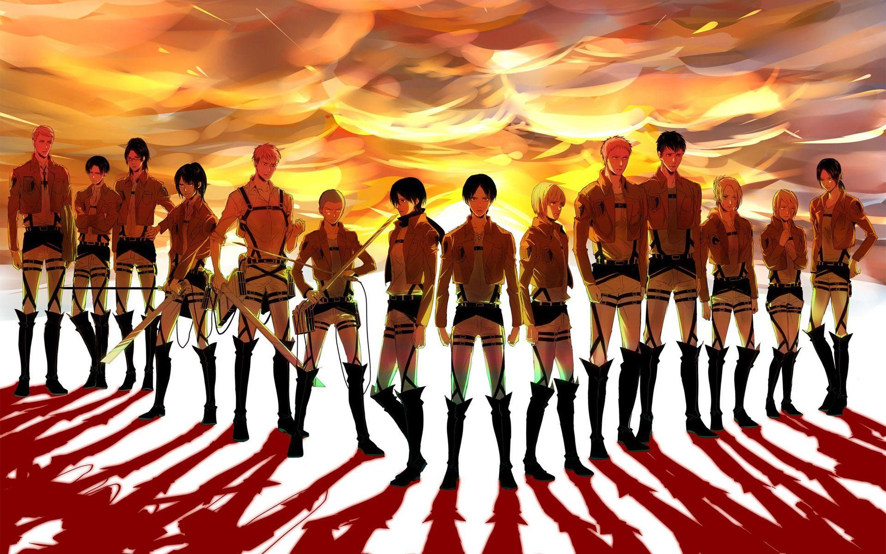
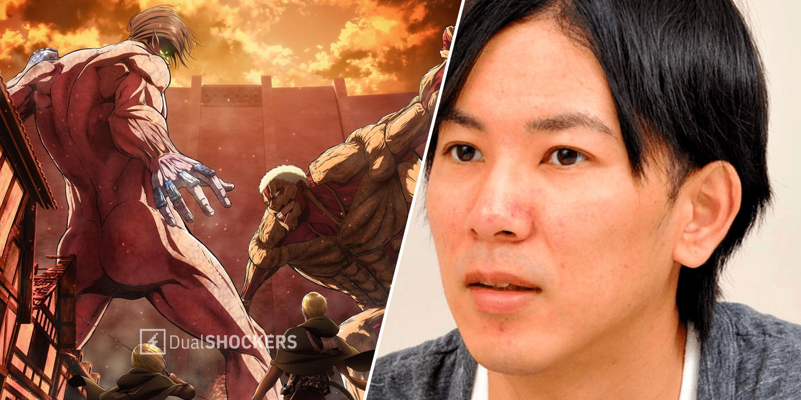

El creador de ‘Ataque a los Titanes’ habla sobre su situación actual en el manga y el impacto de su obra
Un momento en la vida de Hajime Isayama lejos del fenómeno que fue su gran obra.

Hajime Isayama es una de las figuras más respetadas de la industria del manga a nivel mundial. El creador de 'Ataque a los Titanes' (’Shingeki no Kyojin’) hizo posible un fenómeno que ha destacado durante años a nivel mundial, llegando incluso a personas no habituadas a consumir anime, y que en este caso disfrutaron de su obra de principio a fin.
Recientemente, Isayama compartió un mensaje especial con los fans que asistieron en Japón a una versión remasterizada de su película en Dolby Cinema. Durante el saludo, confirmó que no participaría en ninguna nueva serie.
Una obra en la que llegó a darlo todo hasta quedar completamente vacío

Un mensaje de Isayama que dice lo siguiente: “Han pasado muchos años desde que terminó la serialización del manga y la emisión del anime, pero ya no trabajo. De vez en cuando me piden que haga ilustraciones y firme autógrafos, y he colaborado con el proyecto Breeze de Kaji-san, pero ya no dibujo a diario”.
El mangaka también añadió que “no estoy llevando una vida autoindulgente, sino que estoy muy ocupado todos los días. Créanme. Mi vida cotidiana está muy lejos de la vida nini con la que soñaba mientras serializaba”.
Isama admite el notable impacto que ‘Ataque a los Titanes’ ha tenido en su vida, y es que tiene claro que:
“no creo que pudiera escribir nada parecido. Creo que esta primera serialización fue así, en la que lo di todo hasta quedarme completamente vacío".